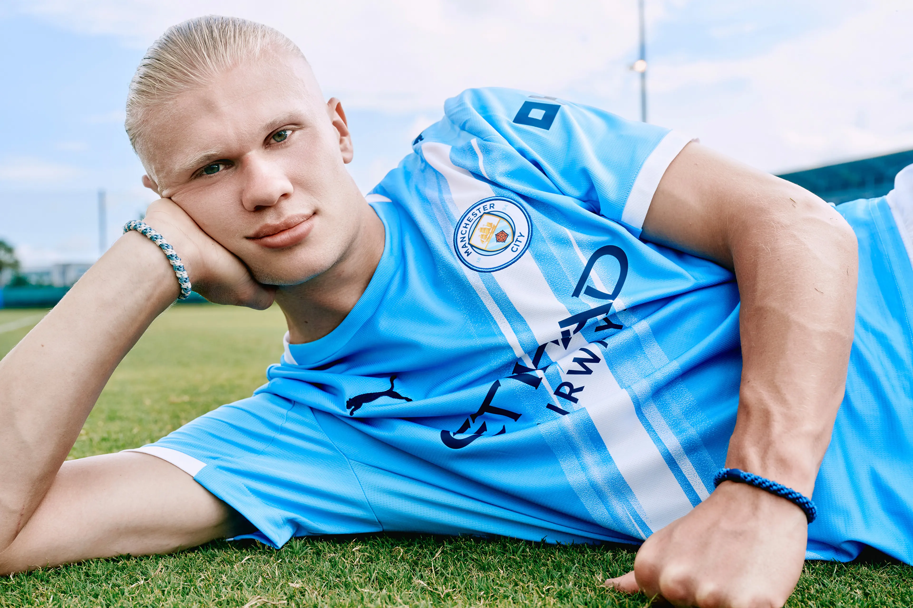
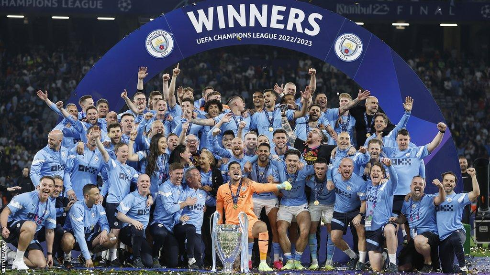
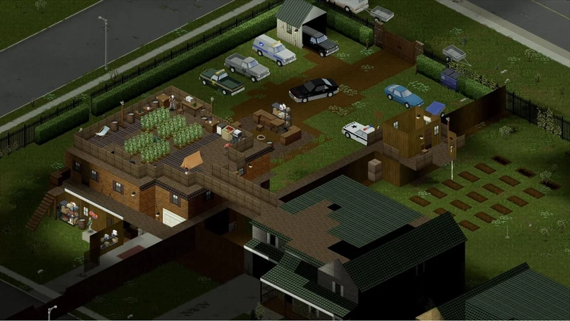
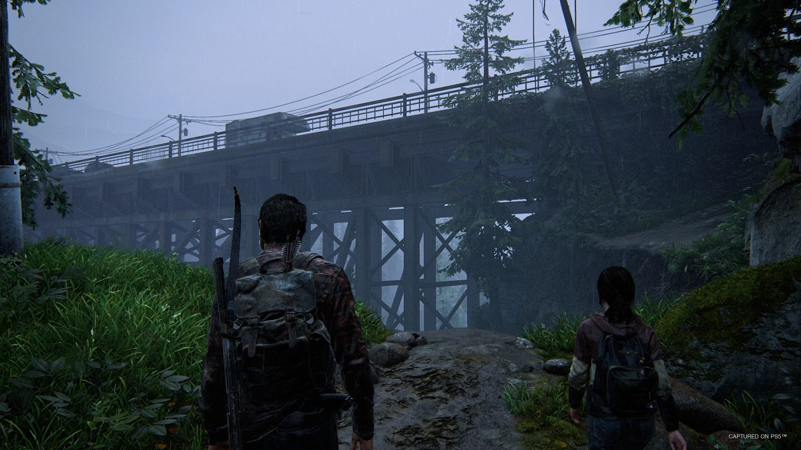
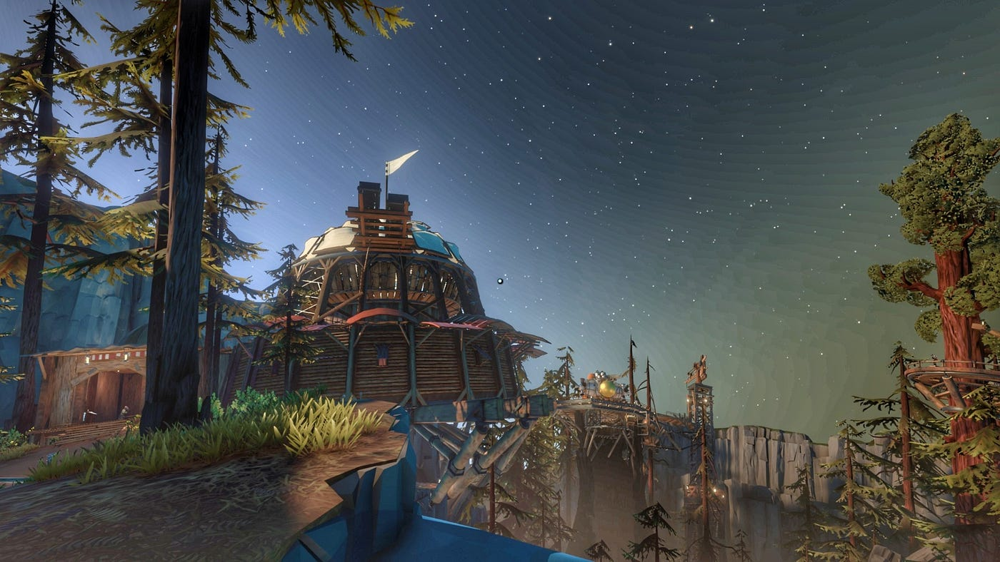
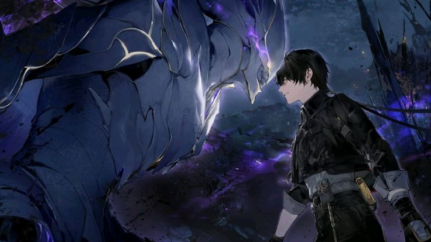

About Me

Outside of academics, I spend most of my time around the things I enjoy most: football, video games, technology, and spending time with my friends.
Football

I love Football/Soccer. The team I support is Manchester City. A team in England, playing in the Premier League. My idol there is Erling Haaland, the No.9 or striker of the team, and also Rayan Cherki, an attacking midfielder whom I LOVE WATCHING PLAY! Of course, I also play on the field. I usually play in our backyard, and from time to time I do open plays and training in BGC, Parqal, Makati, and even in the Laguna campus.
Gaming




I also play video games on my free time. Lately, I've been playing Project Zomboid with my friends. My favorite games are The Last of Us I & II, Outer Wilds, Wuthering Waves, C&C TW, Minecraft, KCD, and many more!
Quick Facts
| Category | Details |
|---|---|
| Nickname | Raprap |
| Course | BS Information Technology |
| Year Level | 4th Year |
| Favorite Football Club | Manchester City |
| Favorite Game Style | Story and multiplayer games |
Other Things I Enjoy
- Learning and discovering new technologies
- Watching movies and TV shows (I LOVE GAME OF THRONES)
- Spending time with my friends
- Trying new things
For a more detailed look at the things I enjoy, check out my Interests Page.
My Music Taste
Music is another part of my free time. One of my favorite bands is The 1975, and one of my favorite songs from them is It's Not Living (If It's Not With You).
Featured Video
Since football is a big part of my interests, I wanted to include one of my favorite football moments here.